ТЕМА 4. Генератори електричних сигналів
1. Призначення й класифікація електронних генераторів.
2. Генератори синусоїдних електричних сигналів.
3. Стабілізація частоти генераторів синусоїдних електричних сигналів.
4. Генератори прямокутних електричних сигналів.
1. Призначення й класифікація електронних генераторів
Електронними генераторами називають пристрої, що перетворюють за допомогою підсилювальних приладів енергію джерела живлення в енергію електричних коливань заданої частоти й форми.
Генератори класифікуються:
– за формою вихідних коливань розрізняються: генератори гармонійних коливаньі генератори несинусоїдних коливань, які називаються також релаксаційними (імпульсними);
– залежно від способу порушення електронні генератори бувають: із незалежним порушенням і із самозбудженням;
Генератори з незалежним порушенням по суті є високочастотними вибірними підсилювачами потужності, на вхід яких подається сигнали від автогенераторів, трансформаторів і т.д.
Виникнення й підтримка незатухаючих гармонійних коливань в автогенераторі досягається за рахунок використання коливальних системи (резонансного контуру,кварцу, фазуючого RС- ланцюга й ін.) і підсилювальних елементів та ланки позитивного зворотного зв’язку;
– по діапазону частот, що генеруються розрізняють генератори: низькочастотні (0,01...10 кГц), високочастотні (0,01...100 мГц), надвисокочастотні (понад 100 мГц).
Електронні генератори широко використовуються в радіопередавачах і радіоприймальних пристроях, вимірювальних апаратурах, установках індукційного нагрівання металів, електронних обчислювальних машинах і ін. Структура такого генератора наведена на рис.1.
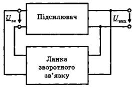
Рис.1. Структура електронного генератора
На вхід підсилювача надходить сигнал Uвх з виходу ланки зворотного зв'язку Uвх = β Uвих, де β = β e јψβ — комплексний коефіцієнт передачі ланки зворотного зв'язку.
Сигнал Uвх підсилюється підсилювачем з комплексним коефіцієнтом підсилення
К = К е јψβ, отже, Uвих = К Uвх.
Якщо підставити вираз для UВХ, то отримаємо Uвих=К∙β∙Uвих. Права і ліва частини цього рівняння однакові лише за умови
К∙β = К∙е јψк ∙β∙е јψβ =1.
Таким чином, стабільний синусоїдний сигнал на виході підсилювача Uвих ≠ 0 можливий лише за умови стійких електромагнітних коливань, тобто комплексного рівняння, яке еквівалентне системі двох дійсних рівнянь:
Кβ = 1, ψк + ψβ = 2πn.
Умова Кβ= 1 називається балансом амплітуд. Це означає, що для підтримки стабільних коливань на виході підсилювача необхідно, щоб втрати енергії у колі зворотного зв'язку (β < 1) компенсувалися надходженням енергії із джерела живлення у підсилювач К > 1.
Якщо Кβ > 1, то відбувається самозбудження генератора, амплітуда коливань зростає. Водночас робоча точка переміщується на менш круті ділянки характеристики з меншими значеннями коефіцієнта підсилення. Процес стабілізується, коли робоча точка потрапить на ділянку характеристики, де виконується умова К∙β= 1.Умова (ψк + ψβ = 2πn.) називається балансом фаз. Баланс фаз означає, що порції енергії з джерела мають надходити в такт з коливаннями енергії в генераторі, тобто зворотний зв'язок повинен бути додатним.
Генератор - це підсилювач з додатним зворотнім зв'язком, який забезпечує підтримку сигналу на виході підсилювача без подачі зовнішнього вхідного сигналу. Генератор перетворює постійний струм від джерела постійної напруги у змінний сигнал. Для виникнення стійких коливань повинні бути виконані дві необхідні та достатні умови - баланс амплітуд і баланс фаз. Фізично це означає, що зворотний зв'язок повинен бути додатним, і в будь-якому місці замкнутого контуру коефіцієнт підсилення повинен бути більшим 1. З точки зору загальної класифікації існують два типи генераторів: генератори синусоїдних сигналів, які генерують гармонійні сигнали, та генератори несинусоїдних (імпульсних) сигналів, які генерують прямокутні, трикутні та ін.
2. Генератори синусоїдних електричних сигналів
Генератором синусоїдних електричних сигналів називають пристрій, який перетворює енергію джерела постійного струму в енергію електромагнітних коливань синусоїдної форми із заданою частотою та амплітудою.
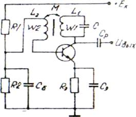
Рис. 2. Електрична схема LС - автогенератора
Для створення гармонійних коливань середніх і високих частот часто використовують LС- генератори, які виконують на однокаскадному підсилювачі з позитивним зворотним зв'язком, що представляє собою резонансний LС –контур. Навантаженням однокаскадного підсилювача є коливальний - контур, включений у колекторний ланцюг транзистора. Опір цього контуру на резонансній частоті, носитьактивний характер.
Зворотний зв'язок утвориться за рахунок котушки L2. Індуктивно пов'язаної з L1, і підключеної до бази. Другий кінець цієї обмотки з'єднується на корпус через що має незначний опір на частоті генерації. Індуктивно зв'язані котушки являють собою трансформатор з обмотками W1 і W2.
Такий зворотний зв'язок називається трансформаторним. Дільник напруги на резисторах R1 і R2 призначений, як і у звичайному підсилювачі, для забезпечення початкового зсуву, що задає положення робочої точки, що повинна відповідати режиму АБ. Температурна стабілізація здійснена за допомогою елементів Rе і Се.
Після включення живлення транзистора виниклі з якої-небудь причини малі коливання напруги на його вході викличуть коливання в контурі із частотою Амплітуда цих коливань, внаслідок впливу позитивного ЗЗ, буде наростати до певного значення, що обмежується нелінійністю транзистора.
У процесі наростання амплітуди коливань транзистор на режимі А, що відповідає малій амплітуді вхідного сигналу, переходить у режим В і потім в режим С. Характерним для цих режимів є однополярні коливання, які викликають заряд конденсаторів однополярними імпульсами струму й відповідно автоматичний зсув положення робочої точки. Виникає режим відсічення транзистора, внаслідок чого амплітуда коливань приймає стале значення. Незважаючи на не синусоїдальну форму колекторного струму, вихідна напруга буде гармонійною, що забезпечується за рахунок властивостей коливального контуру.
На практиці часто застосовують так звані три точкові схеми. На рис. 3 показана триточкова схема автогенератора з автотрансформаторним зв'язком (схема Хартлея). Призначення елементів R1, R2 , Rе і Се таке ж, як і у схемі на рис. 2.
Коливальний контур приєднується до трьох електродів транзистора; колектора, бази через конденсатор С і емітеру через джерело живлення, опір якого незначний.
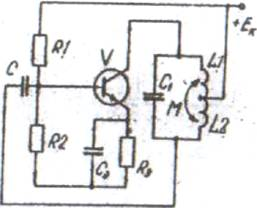
Рис. 3. Індуктивна триточкова схема автогенератора
Напруга ЗЗ знімається із частини витків котушки коливально контуру. Опір конденсатора С у ланцюзі ЗЗ на частоті генерації незначний. Умова балансу досягається за рахунок того, що напруги на кінцях котушки зсунуті на 180°, а в підсилювачі напруга зсунута ще на 180°, тоді загальне зрушення буде дорівнює 360°, триточкова схема автогенератора може бути побудована і з ємнісними зв'язками.
Розглянуті схеми LС - генераторів мають істотний недолік, що полягає в тім, що в діапазоні частот генеруючих коливань, менших декількох десятків кілогерців, значно збільшуються індуктивність і ємність коливального контуру. У цих випадках LС - автогенератори заміняють генераторами типу RС, у яких замість коливального контуру застосовуються вибірні RC-контури, включені в ланцюг ЗЗ резистивного підсилювача. Така заміна дозволяє одержати частоти від часток герца до сотень кілогерців.
RС - автогенератори характеризуються малими габаритними розмірами й масою, низькою вартістю, простим конструктивний виконанням. Однак стабільність частоти в RС- автогенераторів гірше, ніж в LС-автогенераторів, а форма вихідної напруги трохи відрізняється від синусоїди.
RС - автогенератори виконують на основі одно і багатокаскадних підсилювачів.
Умова самозбудження RС - автогенераторів така ж, як і в LC-автогенераторів, тобто Кβ > 1 . Ця умова виконується за рахунок використання в ланцюгах ЗЗ фазоздвигаючих або резонансних елементів: фазуючих RC- ланцюжків; моста Вина; подвійного Т-подібного містка й ін. Фазуючі ланцюжки, що забезпечують необхідне фазове зрушення сигналу, звичайно складаються із трьох або чотирьох Г-подібних RC -ланок. На рис. 4, а, б зображені два варіанти таких ланцюжків, що називаються R - паралель і С -паралель. Для забезпечення зсуву фази вихідної напруги на 180° кожен елемент ланцюжка повинен забезпечити зсув фази на 60°.
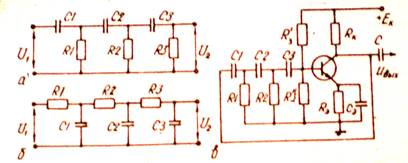
Рис. 4. Електрична схема RС – автогенератора
Схема RС -автогенератора, у якій зворотний зв'язок здійснюється через фазуючий RC-ланцюг, зображена на рис 5, а. Фазозсуваючий ланцюг складається з резисторів R1, R2 і конденсаторів С1, С2, СЗ. Для забезпечення умови балансу фаз вони підключаються до інвертуючого входу операційного підсилювача. Необхідне значення коефіцієнта підсилення, що задовольняє умові балансу амплітуд, установлюється за рахунок введень негативного ЗЗ. За допомогою резистора R0, вводиться частотно-незалежний паралельний негативний ЗЗ.
На рис. 5, б зображена схема RС-автогенератора з мостом Вина, виконаним на елементах R1C1 і R2С2 і включеним у ланцюг позитивним ЗЗ. Для одержання стійких автоколивань і мінімальних спотворень вихідної напруги вводиться негативний ЗЗ за допомогою резистора R0.
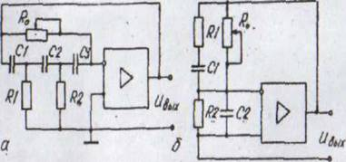
Рис. 5. Електричні схема RС – автогенераторів на операційних підсилювачах
3. Стабілізація частоти генераторів синусоїдних електричних сигналів
Стабільність частоти синусоїдних електричних коливань є одним з найважливіших параметрів генератора. На стабільність частоти впливають такі зовнішні чинники, як зміна температури, вологості, тиску, коливання напруги живлення, електромагнітних полів та ін. Під дією цих зовнішніх чинників змінюються ємності конденсаторів, індуктивності котушок, опір резисторів.
Щоб зменшити нестабільність частоти, застосовують параметричну і кварцову стабілізацію частоти. Параметрична стабілізація частоти генератора синусоїдних електричних коливань полягає в послабленні впливу зовнішніх чинників. Зменшення впливу температури досягається застосуванням термокомпенсуючих резисторів і конденсаторів. Зменшення впливу механічних ударів і вібрації досягається застосуванням масивних корпусів, спеціальних амортизаторів. Для зменшення впливу електромагнітних полів генератори екранують за
допомогою спеціальних екранів. Кварцова стабілізація частоти генератора синусоїдних електричних сигналів полягає у застосуванні кварцових резонаторів, нестабільність частоти ∆ƒ/ƒ яких досягає значення 10-8. Кварцовий резонатор складається з тонкої пластини мінералу (кварцу чи турмаліну) прямокутної або круглої форми, встановленої у кварцеутримувач. Як відомо, для кристала кварцу властивий п'єзоефект.
Якщо кварцову пластину стискати, на протилежних гранях з'являються різнойменні електричні заряди, якщо ж пластину розтягувати — знаки зарядів на тих же гранях зміняться на протилежні (прямий п'єзоефект). Під дією змінного електричного поля у кварцовій пластині виникають механічні пружні коливання (зворотний п'єзоефект), які, у свою чергу, спричиняють появі зарядів на її гранях. Таким чином, кристал кварцу є електротехнічною системою з резонансними властивостями. Кварцовий резонатор еквівалентний електричному коливальному контуру. Еквівалентна схема кварцового резонатора зображена на рис. 6.

Рис. 6. Еквівалентна схема кварцового резонатора
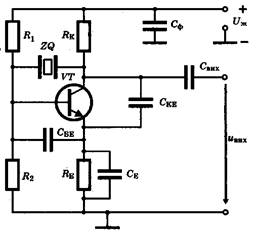
Рис. 7. Генератор, частота якого стабілізована кварцом
4. Генератори прямокутних електричних сигналів
Генератори прямокутних електричних сигналів – це електронні генератори, призначені для генерування імпульсів прямокутної форми. Подання інформації у вигляді імпульсного сигналу має переваги порівняно з неперервним (синусоїдним) сигналом, а саме:
– в імпульсному режимі досягається значно більша потужність під час дії імпульсу, тоді як середня потужність залишається незначною. Оскільки габарити і маса електронної апаратури визначаються середньою потужністю, то вони можуть бути істотно зменшені;
– імпульсний режим роботи дає можливість послабити вплив температури та інших зовнішніх чинників на якість роботи пристроїв;
– в імпульсному режимі значно зменшується вплив завад і зростає пропускна здатність каналів передачі інформації.
Одним з найпоширеніших генераторів прямокутних електричних сигналів є мультивібратор.
Мультивібратор – це пристрій, який почергово знаходиться в двох тимчасово стійких (квазістійких) станах. В якості активних елементів у мультивібраторі застосовуються біполярні і польові транзистори, логічні інтегральні мікросхеми, операційні підсилювачі.
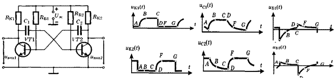
Рис. 8. Електрична схема мультивібратора на біполярних транзисторах та діаграма його роботи
Мультивібратор знаходиться у двох тимчасово стійких станах: наприклад, у першому стані транзистор VТ1 закритий, а транзистор VТ2 — відкритий, у другому стані, навпаки, — транзистор VТ1 відкритий, а транзистор VТ2 — закритий. Розглянемо роботу мультивібратора, починаючи з моменту t = t0 (точка А на діаграмі, зображеній на рис. 8), коли він перейшов у перший стан. Через відкритий емітерний р-n-перехід транзистора VТ2 та через колекторний резистор Rк1 конденсатор С1 заряджається від джерела живлення. Через інтервал часу ТЗ1 конденсатор С1 зарядиться від нуля до напруги, майже рівної Uж (точка В на рис. 8).
Інтервал часу Тз1 залежить від опору резистора RК1 та ємності конденсатора С1 і визначається сталою часу зарядження з1 = RК1 С1. Конденсатор С2, заряджений у попередньому стані до напруги майже рівної Uж (точка А на часовій діаграмі UС2(t)), розряджається через відкриті колекторний і емітерний р-n-переходи транзистора VТ2, через резистор RБ1 і внутрішній опір джерела енергії Uж. Через інтервал часу Тр2 конденсатор С2 розряджається від напруги, рівної Uж (точка А), до напруги, рівної нулю (точка С на часовій діаграмі UС2(t)). Інтервал часу Тр2 розряду залежить від ємності конденсатора С2 та від опору резистора RБ1 і визначається сталою часу розряду р1=RБ1С2. Оскільки опір базових резисторів RБІ, RБ2 у кілька разів більший від опорів відповідних колекторних резисторів RК1 та RК2, то тривалість розрядження конденсаторів більша за тривалість зарядження.
Під час розрядження конденсатора С2 потенціал бази транзистора VT1, яка з'єднана з негативно зарядженою обкладкою конденсатора С2, — від'ємний і змінюється від - Uж (точка А на часовій діаграмі UБ1(t)) до нуля (точка С). Від'ємний потенціал надійно запирає транзистор VТ1. У міру розряджання конденсатора напруга на ньому зменшується і від'ємний потенціал бази збільшується до нуля. Нульовий потенціал бази транзистора VТ1 переводить цей транзистор з режиму відсікання (закритий стан) в активний режим. Відбувається лавиноподібне зменшення опорів емітерного і колекторного переходів транзистора VТ1, що рівнозначно стрибкоподібному зменшенню потенціалу колектора VТ1 від + Uж (точка С на часовій діаграмі UКІ(t)) до майже нульового потенціалу (точка D). Це призводить до стрибкоподібного зменшення потенціалу бази транзистора VТ2 від значення майже рівного нулю (точка С) до значення майже рівного - Uж (точка D)). Різке зменшення потенціалу бази стрибкоподібно переводить транзистор VТ2 з відкритого стану у закритий. Перехід транзистора VТ2 у закритий стан збільшує потенціал бази VТ1 від нуля (точка С) до додатного значення, рівного напрузі на емітерному р-n-переході в режимі насичення. Різке зростання потенціалу бази VТ1 форсовано переводить транзистор з активного режиму в режим насичення.
У результаті такого лавиноподібного процесу мультивібратор стрибком переходить з одного квазістійкого стану в другий, у якому транзистор VТ1 відкритий, а транзистор VТ2 закритий. У новому квазістійкому стані конденсатор С2заряджається, а конденсатор С1 розряджається. Через інтервал часу Тз2 конденсатор С2 зарядиться від нуля (точка D) до напруги Uж (точка F). Конденсатор С1 у цьому квазістійкому стані розряджається від напруги Uж (точка D) до нуля (точка G). Тривалість розряджання Тр1 конденсатора С1 залежить від опору резистора RБ2 і ємності конденсатора С1 і визначається сталою часу р2=RБ2С1. Якщо конденсатор С1 розрядиться до нуля (точка G), то мультивібратор перейде у новий квазістійкий стан і процес повториться.
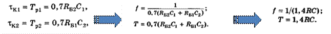
Якщо операційний підсилювач охопити частотно-незалежним зворотним зв'язком, заведеним на неінверсний вхід, і частотно-залежним — на інверсний вхід, отримаємо мультивібратор (рис. 9) на основі операційного підсилювача. Операційний підсилювач у складі мультивібратора почергово знаходиться у двох квазістійких станах: додатного насичення, коли напруга на неінверсному вході більша від напруги на інверсному вході, і від'ємного насичення, коли, навпаки, напруга на інверсному вході більша за напругу на неінверсному вході.
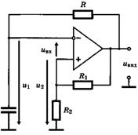 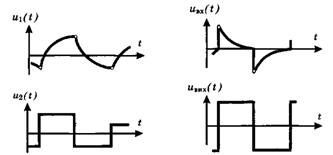
Рис. 9. Електрична схема мультивібратора на операційному підсилювачі та діаграма його роботи
Напруга на інверсному вході U1 (t) дорівнює напрузі на конденсаторі Uс(t), а напруга на неінверсному вході дорівнює напрузі на R2 і зв'язана з вихідною напругою Uвих(t) формулою
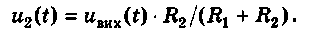
Упродовж часу ∆t напруга U2(t) на неінверсному вході більша від напруги U1(t) на інверсному вході, тобто на диференціальний вхід операційного підсилювача діє сигнал U2(t) – U1(t) = ∆U(t) = Uвх(t). Вхідний сигнал Uвх(t) у цьому інтервалі часу додатний і надійно утримує операційний підсилювач у додатному насиченні.
Вихідний сигнал Uвих(t) в режимі додатного насичення має максимальне додатне значення + Um, майже рівне напрузі джерела живлення додатної полярності. Операційний підсилювач знаходиться у додатному квазістійкому стані. У цьому стані конденсатор С перезаряджається від напруги + U2 до напруги - U2 під дією вихідної напруги. Тривалість перезаряджання визначається сталою часу t = RС і значенням напруги U2(t). Якщо під час перезаряджання напруга U1(t) на конденсаторі зрівнялася з напругою U2(t) і на кілька мілівольт перевищила її, то різниця U2(t) – U1(t) = ∆U(t) стає від'ємною (момент часу t3).
Від'ємний вхідний сигнал ∆U(t), підсилений операційним підсилювачем у десятки тисяч разів, стрибком переводить операційний підсилювач у від'ємне насичення, у якому вихідний сигнал підсилювача набирає максимального від'ємного значення – Um, майже такого, як напруга джерела живлення від'ємної полярності. Мультивібратор знаходиться у другому квазістійкому стані. У цьому стані конденсатор перезаряджається від напруги - U2 до напруги + Um. Стала часу перезаряджання залишається такою самою, як і в першому квазістійкому стані. Якщо напруга на конденсаторі під час перезаряджання досягає значення + U2, то мультивібратор стрибком переходить у перший квазістійкий стан і процес автоколивань триває.